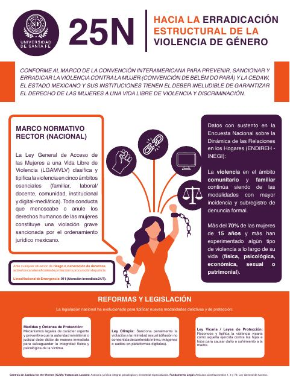
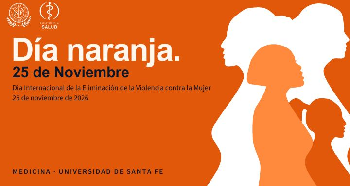

Materiales de la expo
Descarga el cartel y la presentación
Los dos archivos están en PDF. Compártelos con quien quieras.

Presentación: Nombrarla para detenerla
Descargar presentaciónPide ayuda
Toca el número para llamar
Puedes llamar por ti o por alguien más. No necesitas tener pruebas ni estar segura de que es violencia.
72 hno esperes
Si fue violencia sexual, ve a un hospital lo antes posible. En las primeras 72 horas te pueden dar medicamentos para prevenir el VIH y otras infecciones, y anticoncepción de emergencia (hasta 120 horas). Por la NOM-046 te deben atender aunque no hayas puesto una denuncia.
Lugares en Aguascalientes
A dónde puedes ir
El botón Cómo llegar abre Google Maps con la ruta desde donde estás.
Instituto Aguascalentense de las Mujeres
Lun a vie · 8:00 a 16:00Gratuito
Atención psicológica, trabajo social y asesoría jurídica.
Felipe Pescador 102, Talleres F.F.C.C., 20180 Aguascalientes, Ags.Observatorio de Violencia Social y de Género
Asociación civil
Acompañamiento jurídico y social a mujeres víctimas de violencia y a sus familias.
José María Morelos y Pavón 211, Zona Centro, 20000 Aguascalientes, Ags.Instituto Municipal de la Mujer
Lun a vie · 8:00 a 15:30Gratuito
Orientación psicológica y legal del municipio de Aguascalientes.
Vázquez del Mercado 132, Zona Centro, 20000 Aguascalientes, Ags.Fiscalía General del Estado
Abierto 24 horas
Para poner una denuncia.
Av. Héroe de Nacozari 201, Barrio de la Purísima, 20259 Aguascalientes, Ags.Hospital de la Mujer
Abierto 24 horas
Atención médica y de urgencias, también después de una agresión sexual.
Av. Siglo XXI 109, Cd. Satélite Morelos, 20298 Aguascalientes, Ags.El violentómetro
La violencia escala poco a poco
Casi nunca empieza con golpes. Empieza con cosas que parecen normales.
Zona amarilla
Ten cuidado
- Bromas hirientes
- Chantaje y mentiras
- Celos
- Culpabilizar
- Ignorar o ridiculizar
- Revisar tu celular
Zona naranja
Reacciona
- Humillar en público
- Controlar a dónde vas
- Prohibir amistades
- Controlar tu dinero
- Amenazar
- Golpear jugando
Zona roja
Pide ayuda
- Golpes
- Encierro
- Amenazas con armas
- Abuso sexual
- Violación
- Feminicidio
Versión resumida del violentómetro del Instituto Politécnico Nacional.
7 de cada 10
mujeres de 15 años o más en México han vivido al menos un tipo de violencia a lo largo de su vida.
INEGI, ENDIREH 2021: 70.1 %.
Primera respuesta, según la OMS
Si alguien te lo cuenta
- EscucharCon atención y sin juzgar.
- PreguntarQué necesita y qué le preocupa.
- ValidarDile: Te creo. No es tu culpa.
- ProtegerRevisar si está en peligro y hacer un plan.
- ApoyarConectarla con los lugares de esta página.